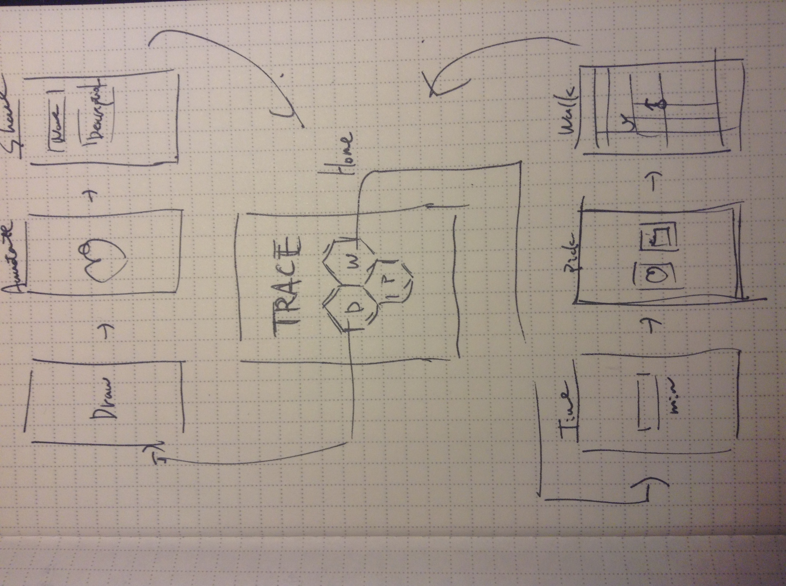
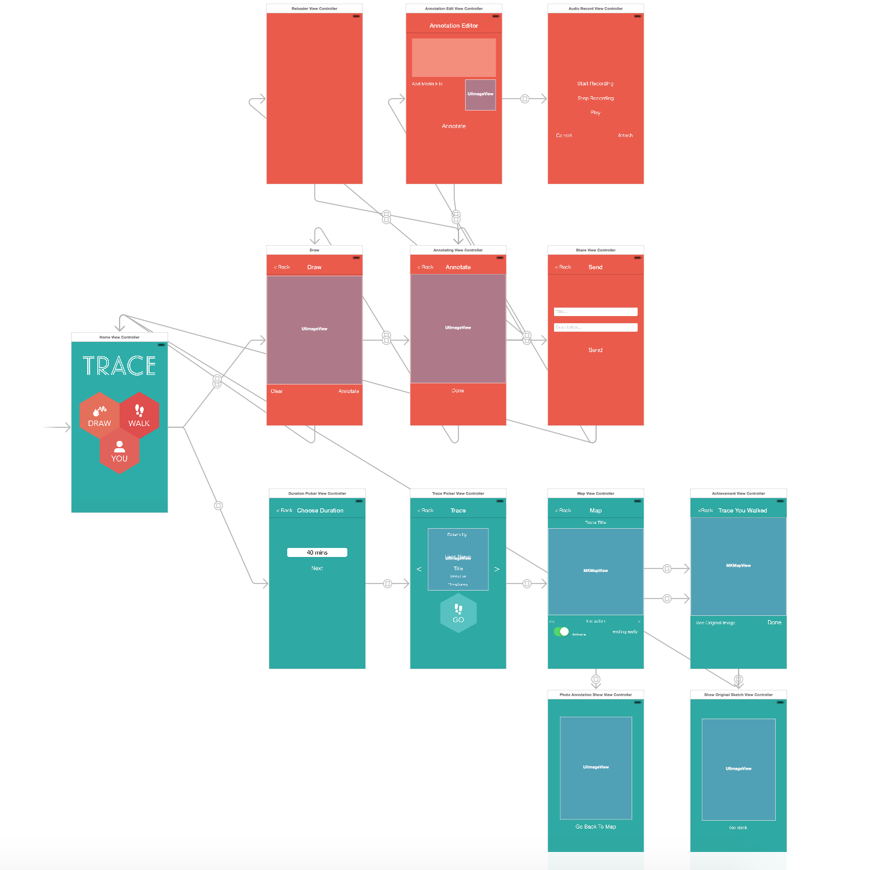
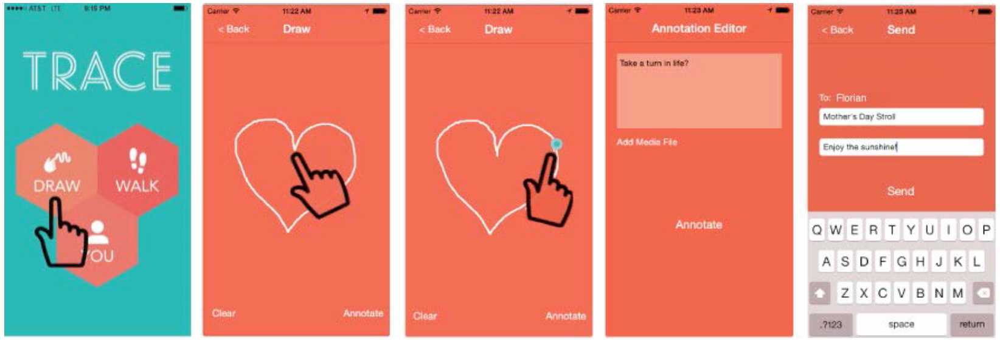
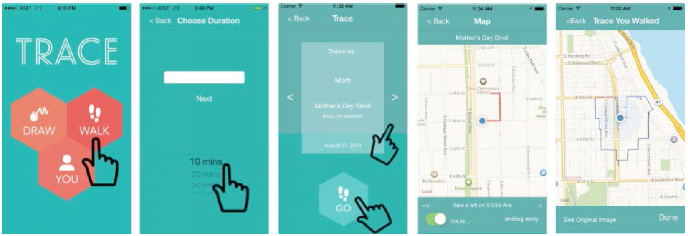

Trace

Overview
Trace is a mobile application that facilitates guided wandering rather than destination-oriented travel. Trace generates walking routes based on digital sketches people create and annotate without a map. In addition to creating walking paths, Trace enables people to send the paths to others, thus developing a unique form of digital communication. While today’s navigation apps lead users from one point to the next, Trace envisions traveling the city as a more improvisational activity (like freehand sketching or letter writing), prompting new forms of expression and insight.
My Role
I was engaged in the project as a Design Technologist, suggesting how to design user interfaces and screen transitions as well as how to implement it.
Process
The original idea for this project came from a class project that one of the teammates had done. The team decided to polish the idea and turn it to a real product. Our team held rapid brainstorming where we tried to find out a couple of compelling scenarios for users to use Trace as a communication tool. At the same time, scenario helped spec out what kind of features we actually want to implement in the application.
 After the team came up with scenarios, I drew a quick screen transition map for the application that shows all interactions that would happen in those scenarios, and actually started development with Objective-C. I particularly cared about ROI of coding vs. usability improvements (e.g., what kinds of UI changes give a boost to usability but do not require too much effort in terms of implementation) since we had about only 10 weeks to finish up the project and the number of developers was very very limited (it was only me!).
Once I finished implementations for all functionalities, I asked the team to walk through the application in order to quickly figure out possible usability issues and sort out UI changes. We listed all possible UI changes and prioritized them based on both effort on coding and levels of positive impact for usability into account, which I implemented. The team had this type of quick review/improvement session a couple of times in short periods. Finally, I finished implementation and passed it to the team in order to conduct deeper user research sessions.
 Outcome
We authored a research paper about this project and it will be published in the proceedings of Computer-Human Interaction conference in 2015. In addition, we are going to present this project at the conference. The second generation of Trace is under development.